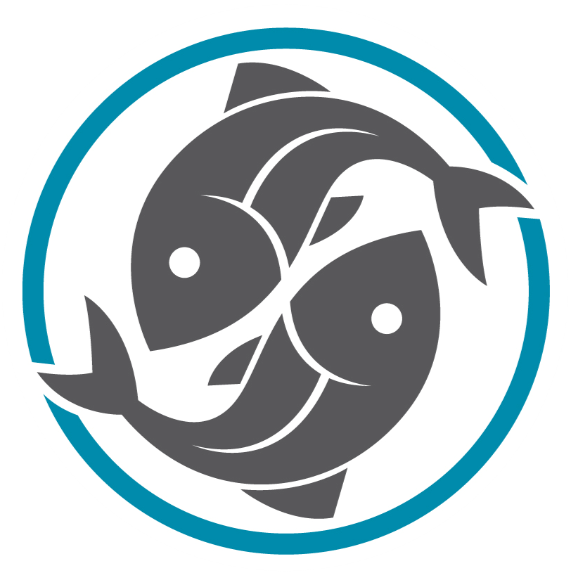
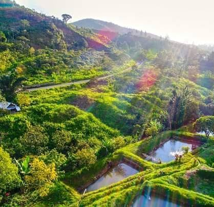

Projects

APPA:
Association des Producteurs Privés d’Alevins d’Andapa
Since 2013, populations of Joba mena (Ptychochromis insolitus), Lamena (Paretroplus nourissati) and Zono (Pachypanchax sp. Sofia) are managed in ponds by Association des Producteurs Privés d’Alevins d’Andapa (APPA). In 2016 they added the Pinestripe Damba (Paretroplus menarambo) to their growing list of captive breeding project species. At APPA these specimens act asinsurance populations to prevent the extinction of their species.
This initiative is collaboratively funded by EUAC (European Union of Aquarium Curators), the American Cichlid Association, Toronto Zoo, the Zoological Society of London and Denver Zoo.

APPA ponds in Madagascar